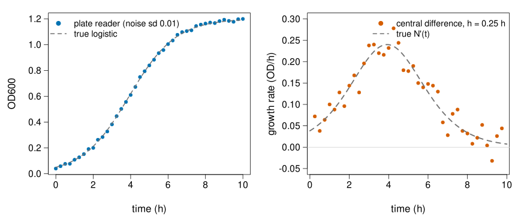
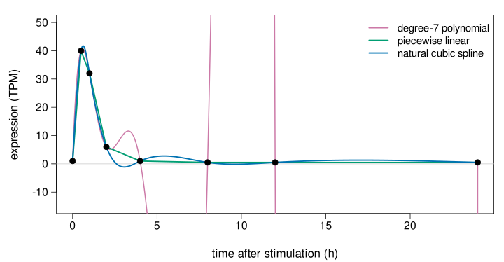
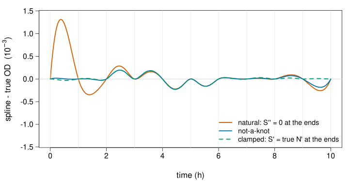
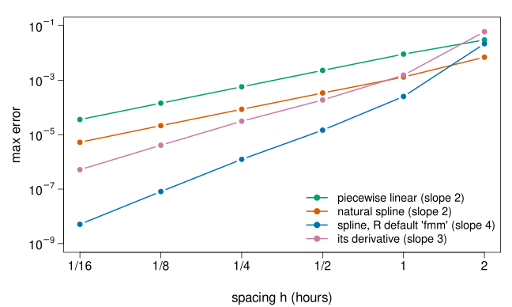
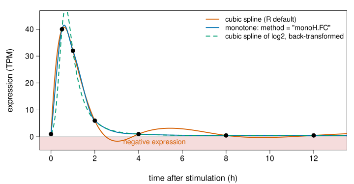
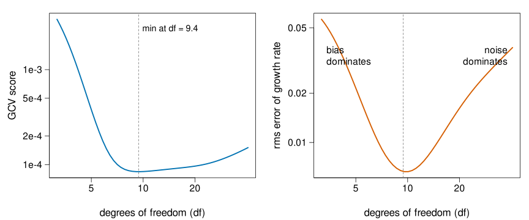
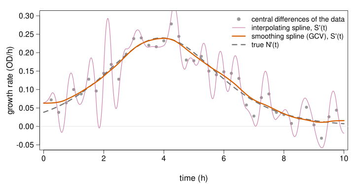
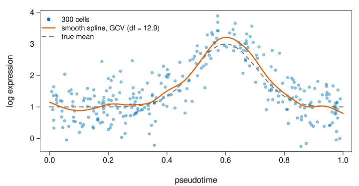
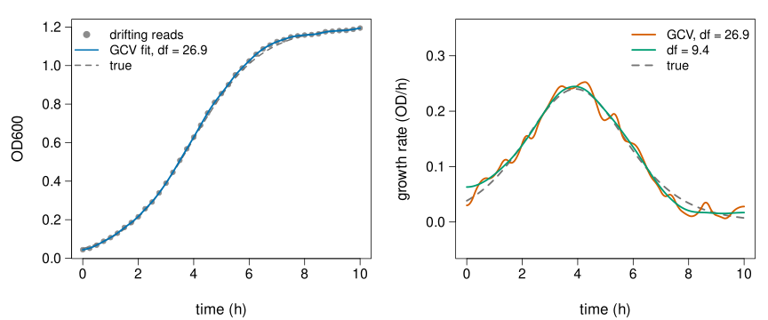

One polynomial through many points wiggles (Polynomial interpolation). The cure is to use many small pieces, joined smoothly.
Piecewise linear: join the dots. Simple, safe, error O(h^2), but the slope jumps at every point.
Cubic splines: a cubic on each interval, with value, slope and curvature continuous. Finding them means solving a tridiagonal system, O(n).
Boundary conditions (natural, not-a-knot, clamped) decide the two missing equations, and R and Python use different defaults.
Smoothing splines do not pass through noisy data. A penalty \lambda trades bias against noise; GCV chooses \lambda from the data.
Biology: a gene’s expression along a time course or pseudotime; the growth rate as the slope of a smoothed OD curve.
A biology problem first
A plate reader measures OD every 15 min. We want the growth rateN'(t), e.g. its maximum.

cd <- (y[3:n] - y[1:(n -2)]) /0.5# central differences, h = 0.25 hrange(cd) # true rate lies between 0.007 and 0.24# [1] -0.032 0.278
The OD looks clean (noise sd 0.01), but its differences are noisy: a negative growth rate in stationary phase.
Recap: one polynomial through all points

8 time points after stimulation of an immediate-early gene. The degree-7 polynomial through them swings down to -1.6\times10^5 between the points.
Piecewise methods only look at nearby points: a peak at 0.5 h does not disturb the curve at 12 h.
Piecewise linear interpolation
On [x_i, x_{i+1}], with h = x_{i+1} - x_i, draw the straight line: p(x) = y_i + \frac{y_{i+1} - y_i}{h}\,(x - x_i), \qquad |f(x) - p(x)| \le \frac{h^2}{8}\max |f''|
K <-1.2; N0 <-0.05; r <-0.8od <-function(t) K / (1+ (K / N0 -1) *exp(-r * t))approx(c(2, 3), od(c(2, 3)), xout =2.5)$y # line between t = 2 and t = 3# [1] 0.3007089od(2.5) # true value# [1] 0.2917783
Error 0.0089. Bound: h = 1, \max|N''| = 0.0739 on [2, 3], so \tfrac18 \cdot 0.0739 = 0.0092. Halve h → error \div 4: order 2.
approx never overshoots: p always stays between neighbouring data values.
But the slope jumps at every data point. The derivative of a piecewise linear curve is a staircase.
Cubic splines: what we ask for
A cubic splineS through (x_1, y_1), \dots, (x_n, y_n): on each of the n - 1 intervals a cubic, such that
S(x_i) = y_i (passes through the data),
S, S' and S'' are continuous at the interior points x_2, \dots, x_{n-1} (no kinks, no jumps in curvature).
Two conditions are missing. They come from the ends: the boundary conditions.
Unknowns: the curvatures M_i = S''(x_i)
S'' is linear on each interval (a cubic has a linear second derivative). With A = \dfrac{x_{i+1} - x}{h_i}, B = \dfrac{x - x_i}{h_i}, h_i = x_{i+1} - x_i:
natural_M <-function(x, y) { # second derivatives, M_1 = M_n = 0 n <-length(x); h <-diff(x); s <-diff(y) / h hl <- h[-(n -1)]; hr <- h[-1] # h_{i-1} and h_i, i = 2..n-1c(0, thomas(hl, 2* (hl + hr), hr, 6*diff(s)), 0)}spline_eval <-function(x, y, M, t) { i <-findInterval(t, x, all.inside =TRUE) # which interval is t in? h <- x[i +1] - x[i]; A <- (x[i +1] - t) / h; B <- (t - x[i]) / h A * y[i] + B * y[i +1] + ((A^3- A) * M[i] + (B^3- B) * M[i +1]) * h^2/6}natural_M(c(0, 1, 2, 3), c(0, 1, 0, 1))# [1] 0 -4 4 0
thomas(a, b, c, d) is the function from Structure: symmetric, banded, sparse (sub-, main, super-diagonal, right-hand side; all of length n, a[1] and c[n] unused).
findInterval finds the interval of each t by binary search.
Check against the library
M <-natural_M(t, y) # the 41 noisy OD readsf <-splinefun(t, y, method ="natural") # R's natural splinett <-seq(0, 10, by =0.01)max(abs(spline_eval(t, y, M, tt) -f(tt)))# [1] 2.220446e-16f(3.1); f(3.1, deriv =1) # value and slope at 3.1 h# [1] 0.4073834# [1] 0.2608974
splinefun returns a function; deriv = 1, 2, 3 gives the derivatives of the spline.
Agreement to rounding level: our 8 lines and R’s compiled code solve the same tridiagonal system.
Check for your own spline: it passes through the data, and S' from the left equals S' from the right at every x_i.
Boundary conditions: the two missing equations
name
condition at each end
when to use
natural
S'' = 0: M_1 = M_n = 0
no information about the ends
clamped
S' = a known slope, f'(x_1), f'(x_n)
slope known (e.g. a plateau: S' = 0)
not-a-knot
S''' continuous at x_2 and x_{n-1}
default in Python and MATLAB
Clamped, left end: 2h_1 M_1 + h_1 M_2 = 6\left(\frac{y_2 - y_1}{h_1} - f'(x_1)\right). Still tridiagonal.
Not-a-knot: the first two pieces are one cubic. The system is no longer exactly tridiagonal, but still O(n).
R’s default, method = "fmm" (Forsythe, Malcolm, Moler), fits a cubic to the first and last 4 points and matches its S''' at each end.
Boundary conditions: what they change

11 exact OD values, h = 1 h. Away from the ends all three agree.
Natural forces S''(0) = 0, but N''(0) = 0.028: the error near t = 0 is about 4× larger than anywhere else.
Same data, different defaults
x <-0:4; y5 <-c(0, 1, 0, 1, 0)splinefun(x, y5)(0.5) # R default: "fmm"# [1] 1.055556splinefun(x, y5, method ="natural")(0.5)# [1] 0.7678571
call
end condition
value at 0.5
R splinefun(x, y), spline()
fmm
1.0556
R splinefun(x, y, method = "natural")
natural
0.7679
Python CubicSpline(x, y)
not-a-knot
1.1250
Python CubicSpline(x, y, bc_type="natural")
natural
0.7679
Check: when an R and a Python result differ near the ends, look at the end conditions first.
How fast does the error fall?

Exact OD values on a grid of spacing h. Slopes read off as in Convergence and cost: linear O(h^2), cubic spline O(h^4), its derivative O(h^3).
Natural ends drop the spline to O(h^2): the error at t = 0 dominates.
Failure: overshoot

After a steep drop the cubic swings below the data: -1.6 TPM at 3 h. Negative expression.
Fixes: a monotone interpolant (splinefun(method = "monoH.FC"), Python PchipInterpolator), or interpolate \log_2 expression and transform back.
Check: plot the interpolant on a fine grid; look for values outside the range of neighbouring data.
Interpolating noisy data
An interpolating spline goes through every point, noise included.
rms <-function(e) sqrt(mean(e^2))rate <-function(t) r *od(t) * (1-od(t) / K) # true growth raterms(cd -rate(t[2:(n -1)])) # central differences# [1] 0.02427257f <-splinefun(t, y, method ="natural")rms(f(t, deriv =1) -rate(t)) # slope of interpolating spline# [1] 0.03827564
The spline’s slope is worse than plain central differences: it bends to hit every noisy point.
With exact data the spline was accurate to 10^{-6}; with noise sd 0.01 it is wrong by 0.04. More points (smaller h) do not help.
Smoothing splines
Among all smooth curves f, choose the one that minimises
Small \lambda (df = 30): follows the noise; the slope is useless. Large \lambda (df = 4): too stiff; it cuts the peak growth rate (bias).
df (equivalent degrees of freedom): from 2 (a line) to n (interpolation). Easier to read than \lambda.
Choosing \lambda: cross-validation and GCV
Leave-one-out CV: leave point i out, fit, predict y_i; minimise the mean squared prediction error. For a smoother with hat matrixA (\hat{\mathbf y} = A\mathbf y) no refit is needed: \text{CV}(\lambda) = \frac1n \sum_i \left(\frac{y_i - \hat y_i}{1 - A_{ii}}\right)^2, \qquad \text{GCV}(\lambda) = \frac{n\,\text{RSS}}{(n - \text{df})^2}, \quad \text{df} = \operatorname{tr} A
fit <-smooth.spline(t, y) # lambda chosen by GCV (default)fit# Smoothing Parameter spar= 0.565132 lambda= 0.0001355283 (14 iterations)# Equivalent Degrees of Freedom (Df): 9.416379# Penalized Criterion (RSS): 0.002053709# GCV: 8.4411e-05
GCV replaces each A_{ii} by the average \text{df}/n: cheaper, and less sensitive to single points. cv = TRUE gives ordinary CV (df = 9.8 here).
GCV against the true error

Left: GCV score over a grid of \lambda (shown as df). Right: the true rms error of the growth rate, which we know only because the data are simulated.
The GCV minimum (df = 9.4) is near the best df for the slope. That is luck as much as design: GCV optimises the curve, not its derivative.
Spline lab: interpolate or smooth
Growth rate from the smoothed curve

g <-predict(fit, tf, deriv =1)$y # tf: fine grid, 0 to 10 hc(max(g), tf[which.max(g)]) # true: 0.24 at 3.92 h# [1] 0.2388003 4.0100000
RMS error of the growth rate: central differences 0.024, interpolating spline 0.038, smoothing spline 0.0067.
Numerical differentiation repeats this on a denser, less noisy run (every 10 min, sd 0.005): smoothing spline rms 0.0047, a wider difference stencil 0.0053.
Biology: expression along pseudotime

300 cells, ordered by pseudotime; one gene, noisy. smooth.spline(pt, ex): df = 12.9; peak at pseudotime 0.602 (true 0.6).
Same tool as the trend fits in single-cell trajectory packages (tradeSeq, Monocle), which fit a spline trend per gene.
Failure: GCV with correlated noise

Here the reads drift (each error is 0.9 × the previous one plus new noise, as with condensation or settling cells). GCV sees the drift as signal: df = 26.9, a wiggly slope.
GCV assumes independent errors. Check: lag-1 correlation of the residuals (acf); here -0.60. Use replicate wells, or fix df by hand.
R and Python
task
R
Python (scipy)
piecewise linear
approx, approxfun
np.interp
cubic spline
splinefun(x, y) (fmm), method = "natural"
CubicSpline(x, y) (not-a-knot), bc_type=
clamped
pracma::cubicspline(endp2nd = TRUE, der =)
CubicSpline(bc_type=((1, a), (1, b)))
monotone
splinefun(method = "monoH.FC")
PchipInterpolator
derivative
f(t, deriv = 1)
cs(t, 1), cs.derivative()
smoothing spline
smooth.spline(x, y); df =, lambda =, cv = TRUE
make_smoothing_spline(x, y, lam=None)
its slope
predict(fit, t, deriv = 1)
fit.derivative()(t)
Python’s lam = R’s lambda × (range of x)^3, because R rescales x to [0, 1].
Checklist
Plot on a fine grid, not only at the data points: overshoot and wiggles hide between them.
Values outside the data range (negative expression, OD above the plateau) → monotone interpolant or a log scale.
R and Python disagree near the ends → compare the end conditions (fmm, not-a-knot, natural).
Need a slope from noisy data → smoothing spline, not interpolation, not raw differences.
Report df (or \lambda and the units of t) with every smoothing spline.
Check the residuals: independent-looking noise, no runs, no strong lag-1 correlation.
Change df by ±30 %: conclusions that depend on it are not supported by the data.
Summary
Piecewise linear: safe, O(h^2), no overshoot, but a staircase slope.
Cubic spline: cubics with continuous S, S', S''. The curvatures M_i solve a tridiagonal, diagonally dominant system, O(n) by Thomas. Error O(h^4), slope O(h^3).
Boundary conditions supply the two missing equations: natural (S'' = 0, only O(h^2) near the ends), clamped (known slope), not-a-knot / fmm. R and Python defaults differ.
Cubics overshoot after steep changes; use a monotone interpolant or a log scale when the sign matters.
With noisy data, interpolation and differences amplify the noise. A smoothing spline minimises misfit +\ \lambda\,\int f''^2; \lambda trades bias against noise, chosen by GCV/CV; report df.
Growth rate from OD: smoothing spline slope, rms error 0.007 against 0.024 for central differences.
Next:Fourier series and the FFT, a global basis of sines and cosines, for periodic signals such as circadian expression.